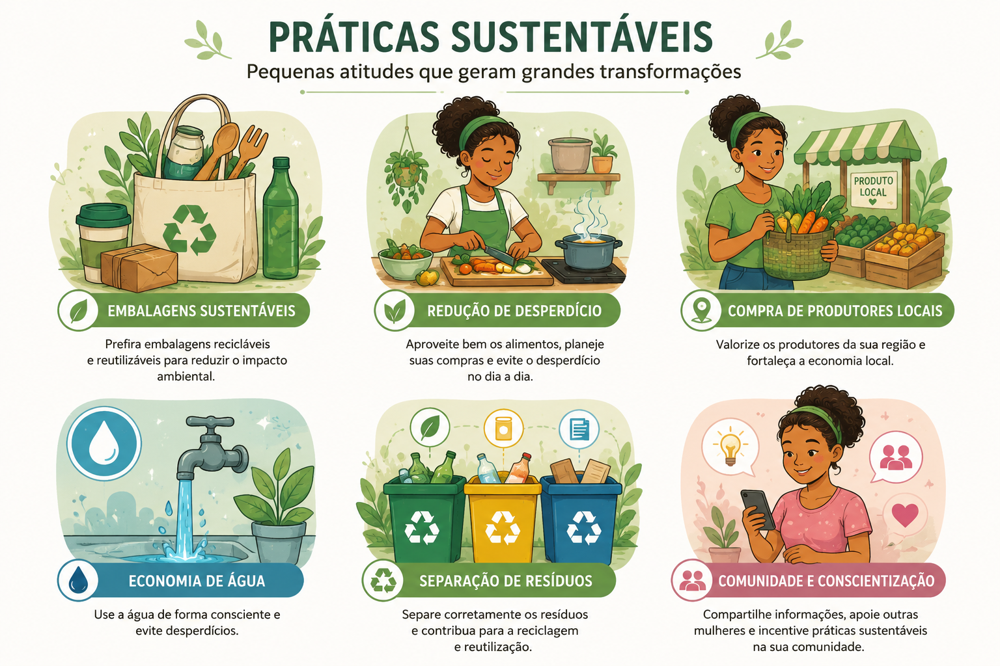

Dicas de Sustentabilidade
A sustentabilidade no setor alimentício é essencial para reduzir desperdícios, diminuir impactos ambientais e fortalecer práticas mais responsáveis na sociedade. Pequenas atitudes podem gerar grandes resultados.

Sustentabilidade na Prática
A sustentabilidade não precisa ser complicada. Pequenas mudanças no dia a dia podem reduzir desperdícios, economizar recursos e ainda fortalecer a imagem profissional do seu negócio. Confira ações simples que fazem diferença na prática.
♻️ Embalagens mais conscientes
Utilize embalagens recicláveis ou biodegradáveis. Além de ajudar o meio ambiente, isso melhora a imagem da marca e atrai clientes mais conscientes.
🍽️ Aproveitamento total dos alimentos
Reaproveite cascas e talos em receitas, reduza sobras e planeje melhor a produção. Isso diminui custos e evita desperdícios.
💧 Economia de água no preparo
Use bacias para lavar alimentos, evite água corrente por muito tempo e reaproveite água sempre que possível.
⚡ Uso inteligente de energia
Evite ligar forno e fogão várias vezes ao dia. Organize a produção por etapas. Isso economiza energia e otimiza o tempo.
🌎 Compra de fornecedores locais
Priorizar produtores locais reduz impacto ambiental no transporte e fortalece a economia da sua região.
🗑️ Separação correta dos resíduos
Separe resíduos recicláveis e orgânicos. Se possível, incentive compostagem ou descarte correto de óleo de cozinha.